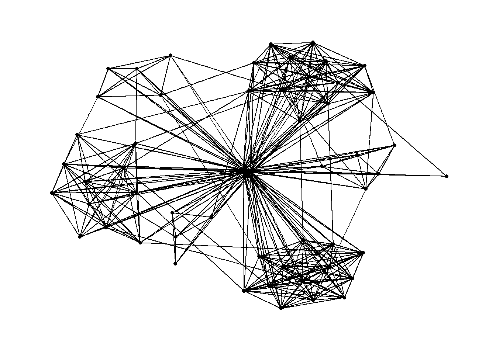
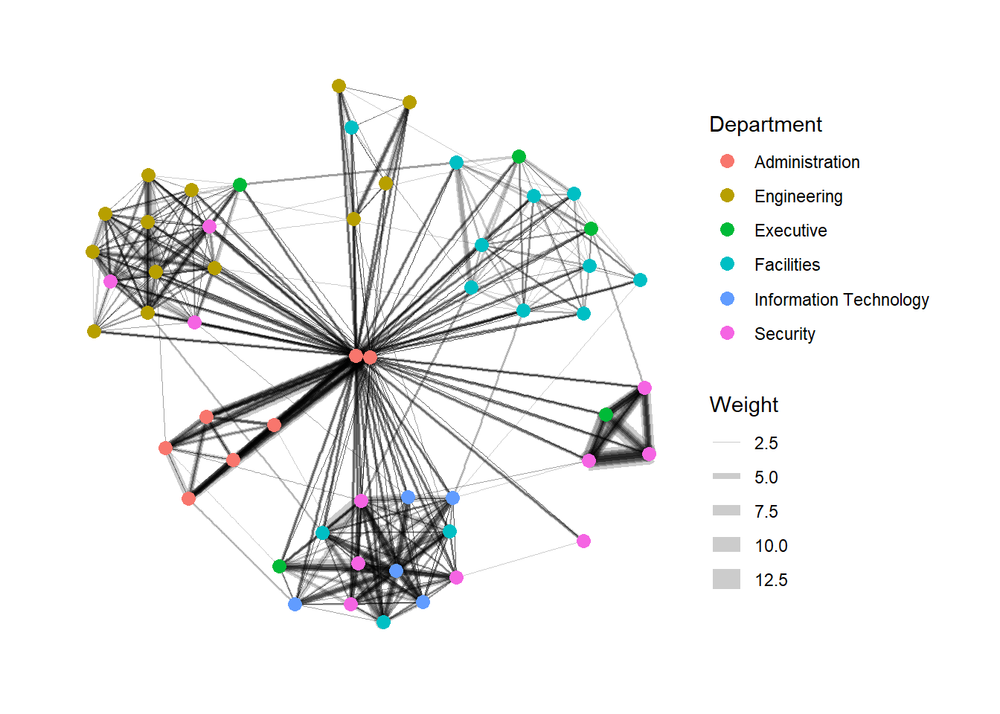
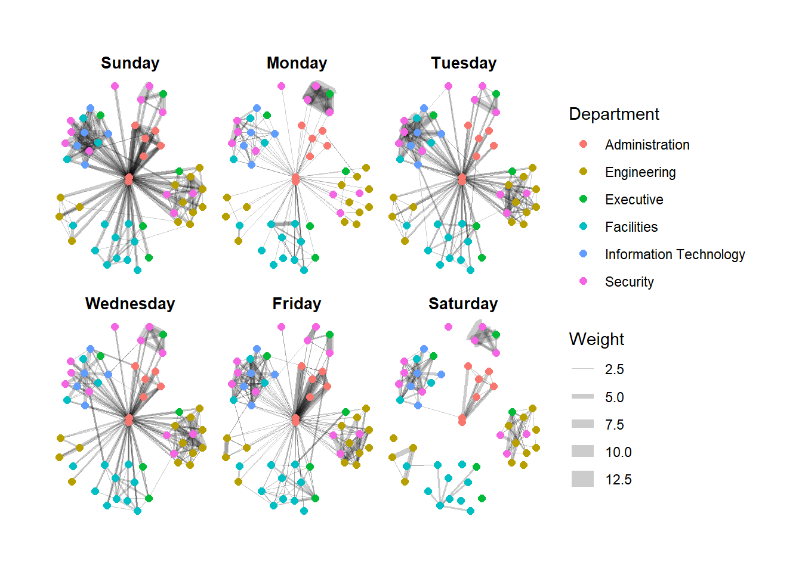
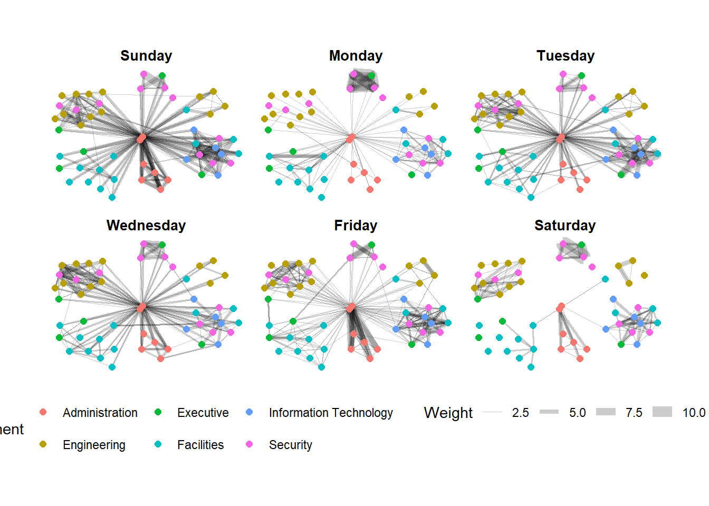
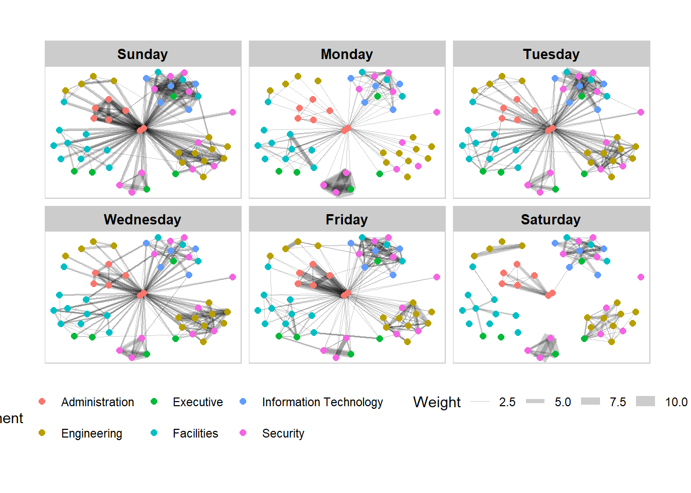
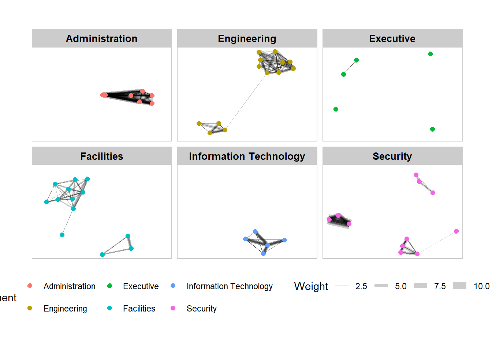
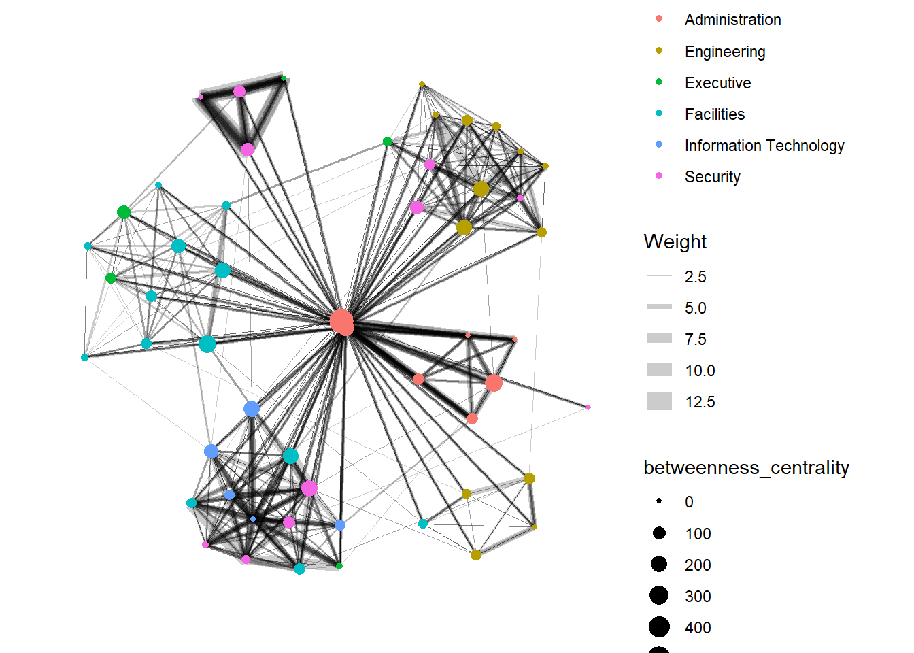
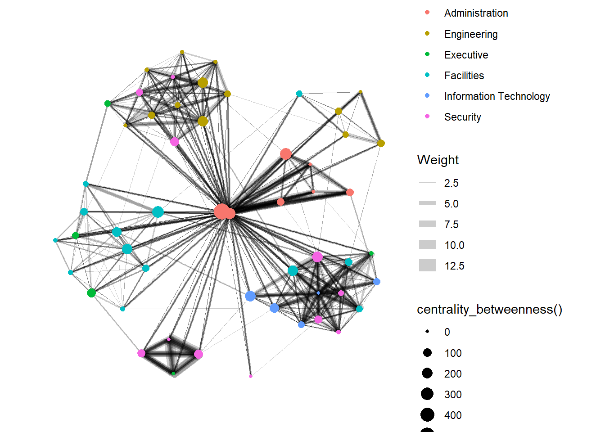
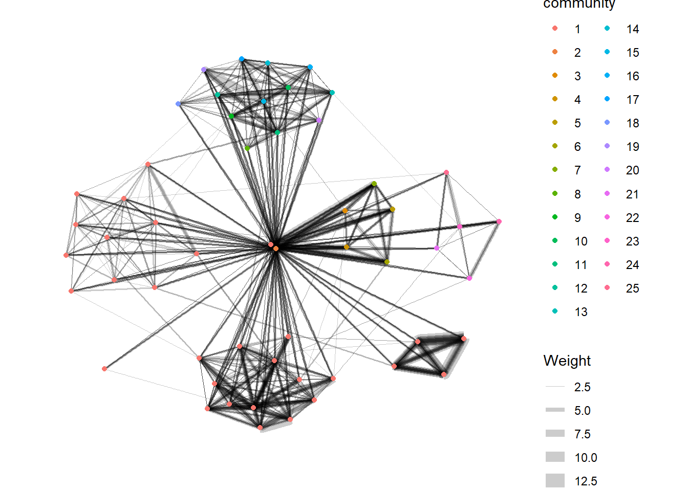

Code
pacman::p_load(igraph, tidygraph, ggraph,
visNetwork, lubridate, clock,
tidyverse, graphlayouts,
concaveman, ggforce)Note: Please toggle between ‘Show’ and ‘Hide’ above based on your preference for viewing the R codes.
In this hands-on exercise, you will learn how to model, analyse and visualise network data using R.
By the end of this hands-on exercise, you will be able to:
create graph object data frames, manipulate them using appropriate functions of dplyr, lubridate, and tidygraph,
build network graph visualisation using appropriate functions of ggraph,
compute network geometrics using tidygraph,
build advanced graph visualisation by incorporating the network geometrics, and
build interactive network visualisation using visNetwork package.
In this hands-on exercise, four network data modelling and visualisation packages will be installed and launched. They are igraph, tidygraph, ggraph and visNetwork. Beside these four packages, tidyverse and lubridate, an R package specially designed to handle and wrangling time data will be installed and launched too.
pacman::p_load(igraph, tidygraph, ggraph,
visNetwork, lubridate, clock,
tidyverse, graphlayouts,
concaveman, ggforce)The data sets used in this hands-on exercise is from an oil exploration and extraction company. There are two data sets. One contains the nodes data and the other contains the edges (also know as link) data.
In this step, you will import GAStech_email_node.csv and GAStech_email_edges-v2.csv into RStudio environment by using read_csv() of readr package.
GAStech_nodes <- read_csv("GAStech_email_node.csv")
GAStech_edges <- read_csv("GAStech_email_edge-v2.csv")Next, we will examine the structure of the data frame using glimpse() of dplyr.
glimpse(GAStech_edges)Rows: 9,063
Columns: 8
$ source <dbl> 43, 43, 44, 44, 44, 44, 44, 44, 44, 44, 44, 44, 26, 26, 26…
$ target <dbl> 41, 40, 51, 52, 53, 45, 44, 46, 48, 49, 47, 54, 27, 28, 29…
$ SentDate <chr> "6/1/2014", "6/1/2014", "6/1/2014", "6/1/2014", "6/1/2014"…
$ SentTime <time> 08:39:00, 08:39:00, 08:58:00, 08:58:00, 08:58:00, 08:58:0…
$ Subject <chr> "GT-SeismicProcessorPro Bug Report", "GT-SeismicProcessorP…
$ MainSubject <chr> "Work related", "Work related", "Work related", "Work rela…
$ sourceLabel <chr> "Sven.Flecha", "Sven.Flecha", "Kanon.Herrero", "Kanon.Herr…
$ targetLabel <chr> "Isak.Baza", "Lucas.Alcazar", "Felix.Resumir", "Hideki.Coc…The code below will be used to perform the changes.
GAStech_edges <- GAStech_edges %>%
mutate(SendDate = dmy(SentDate)) %>%
mutate(Weekday = wday(SentDate,
label = TRUE,
abbr = FALSE))Table below shows the data structure of the reformatted GAStech_edges data frame.
A close examination of GAStech_edges data.frame reveals that it consists of individual e-mail flow records. This is not very useful for visualisation. In view of this, we will aggregate the individual by date, senders, receivers, main subject and day of the week.
GAStech_edges_aggregated <- GAStech_edges %>%
filter(MainSubject == "Work related") %>%
group_by(source, target, Weekday) %>%
summarise(Weight = n()) %>%
filter(source!=target) %>%
filter(Weight > 1) %>%
ungroup()Table below shows the data structure of the reformatted GAStech_edges data frame
In this section, you will learn how to create a graph data model by using tidygraph package. It provides a tidy API for graph/network manipulation. While network data itself is not tidy, it can be envisioned as two tidy tables, one for node data and one for edge data. tidygraph provides a way to switch between the two tables and provides dplyr verbs for manipulating them. Furthermore it provides access to a lot of graph algorithms with return values that facilitate their use in a tidy workflow.
Before getting started, you are advised to read these two articles:
Two functions of tidygraph package can be used to create network objects, they are:
tbl_graph() creates a tbl_graph network object from nodes and edges data.
as_tbl_graph() converts network data and objects to a tbl_graph network. Below are network data and objects supported by as_tbl_graph()
a node data.frame and an edge data.frame,
data.frame, list, matrix from base,
igraph from igraph,
network from network,
dendrogram and hclust from stats,
Node from data.tree,
phylo and evonet from ape, and
graphNEL, graphAM, graphBAM from graph (in Bioconductor).

tbl_graph() to build tidygraph data model.In this section, you will use tbl_graph() of tinygraph package to build an tidygraph’s network graph data.frame.
Before typing the codes, you are recommended to review to reference guide of tbl_graph().
GAStech_graph <- tbl_graph(nodes = GAStech_nodes,
edges = GAStech_edges_aggregated,
directed = TRUE)GAStech_graph# A tbl_graph: 54 nodes and 1372 edges
#
# A directed multigraph with 1 component
#
# Node Data: 54 × 4 (active)
id label Department Title
<dbl> <chr> <chr> <chr>
1 1 Mat.Bramar Administration Assistant to CEO
2 2 Anda.Ribera Administration Assistant to CFO
3 3 Rachel.Pantanal Administration Assistant to CIO
4 4 Linda.Lagos Administration Assistant to COO
5 5 Ruscella.Mies.Haber Administration Assistant to Engineering Group Mana…
6 6 Carla.Forluniau Administration Assistant to IT Group Manager
7 7 Cornelia.Lais Administration Assistant to Security Group Manager
8 44 Kanon.Herrero Security Badging Office
9 45 Varja.Lagos Security Badging Office
10 46 Stenig.Fusil Security Building Control
# ℹ 44 more rows
#
# Edge Data: 1,372 × 4
from to Weekday Weight
<int> <int> <ord> <int>
1 1 2 Sunday 5
2 1 2 Monday 2
3 1 2 Tuesday 3
# ℹ 1,369 more rowsThe output above reveals that GAStech_graph is a tbl_graph object with 54 nodes and 4541 edges.
The command also prints the first six rows of “Node Data” and the first three of “Edge Data”.
It states that the Node Data is active. The notion of an active tibble within a tbl_graph object makes it possible to manipulate the data in one tibble at a time.
The nodes tibble data frame is activated by default, but you can change which tibble data frame is active with the activate() function. Thus, if we wanted to rearrange the rows in the edges tibble to list those with the highest “weight” first, we could use activate() and then arrange().
GAStech_graph %>%
activate(edges) %>%
arrange(desc(Weight))# A tbl_graph: 54 nodes and 1372 edges
#
# A directed multigraph with 1 component
#
# Edge Data: 1,372 × 4 (active)
from to Weekday Weight
<int> <int> <ord> <int>
1 40 41 Saturday 13
2 41 43 Monday 11
3 35 31 Tuesday 10
4 40 41 Monday 10
5 40 43 Monday 10
6 36 32 Sunday 9
7 40 43 Saturday 9
8 41 40 Monday 9
9 19 15 Wednesday 8
10 35 38 Tuesday 8
# ℹ 1,362 more rows
#
# Node Data: 54 × 4
id label Department Title
<dbl> <chr> <chr> <chr>
1 1 Mat.Bramar Administration Assistant to CEO
2 2 Anda.Ribera Administration Assistant to CFO
3 3 Rachel.Pantanal Administration Assistant to CIO
# ℹ 51 more rowsVisit the reference guide of activate() to find out more about the function.
ggraph is an extension of ggplot2, making it easier to carry over basic ggplot skills to the design of network graphs.
As in all network graph, there are three main aspects to a ggraph’s network graph, they are:
For a comprehensive discussion of each of this aspect of graph, please refer to their respective vignettes provided.
The code chunk below uses ggraph(), geom-edge_link() and geom_node_point() to plot a network graph by using GAStech_graph. Before your get started, it is advisable to read their respective reference guide at least once.
ggraph(GAStech_graph) +
geom_edge_link() +
geom_node_point()
The basic plotting function is ggraph(), which takes the data to be used for the graph and the type of layout desired. Both of the arguments for ggraph() are built around igraph. Therefore, ggraph() can use either an igraph object or a tbl_graph object.
In this section, you will use theme_graph() to remove the x and y axes. Before your get started, it is advisable to read it’s reference guide at least once.
g <- ggraph(GAStech_graph) +
geom_edge_link(aes()) +
geom_node_point(aes())
g + theme_graph()
ggraph introduces a special ggplot theme that provides better defaults for network graphs than the normal ggplot defaults. theme_graph(), besides removing axes, grids, and border, changes the font to Arial Narrow (this can be overridden).
The ggraph theme can be set for a series of plots with the set_graph_style() command run before the graphs are plotted or by using theme_graph() in the individual plots.
Furthermore, theme_graph() makes it easy to change the coloring of the plot.
g <- ggraph(GAStech_graph) +
geom_edge_link(aes(colour = 'grey50')) +
geom_node_point(aes(colour = 'grey40'))
g + theme_graph(background = 'grey10',
text_colour = 'white')
ggraph support many layout for standard used, they are: star, circle, nicely (default), dh, gem, graphopt, grid, mds, spahere, randomly, fr, kk, drl and lgl. Figures below and on the right show layouts supported by ggraph().
The code chunks below will be used to plot the network graph using Fruchterman and Reingold layout. layout argument is used to define the layout to be used.
g <- ggraph(GAStech_graph,
layout = "fr") +
geom_edge_link(aes()) +
geom_node_point(aes())
g + theme_graph()
In this section, you will colour each node by referring to their respective departments. geom_node_point is equivalent in functionality to geo_point of ggplot2. It allows for simple plotting of nodes in different shapes, colours and sizes.
g <- ggraph(GAStech_graph,
layout = "nicely") +
geom_edge_link(aes()) +
geom_node_point(aes(colour = Department,
size = 3))
g + theme_graph()
In the code chunk below, the thickness of the edges will be mapped with the Weight variable. geom_edge_link draws edges in the simplest way - as straight lines between the start and end nodes. But, it can do more that that. The argument width is used to map the width of the line in proportional to the Weight attribute and argument alpha is used to introduce opacity on the line.
g <- ggraph(GAStech_graph,
layout = "nicely") +
geom_edge_link(aes(width=Weight),
alpha=0.2) +
scale_edge_width(range = c(0.1, 5)) +
geom_node_point(aes(colour = Department),
size = 3)
g + theme_graph()
Another very useful feature of ggraph is faceting. In visualising network data, this technique can be used to reduce edge over-plotting in a very meaning way by spreading nodes and edges out based on their attributes. In this section, you will learn how to use faceting technique to visualise network data.
There are three functions in ggraph to implement faceting, they are:
facet_nodes() whereby edges are only draw in a panel if both terminal nodes are present here,
facet_edges() whereby nodes are always drawn in al panels even if the node data contains an attribute named the same as the one used for the edge facetting, and
facet_graph() faceting on two variables simultaneously.
In the code chunk below, facet_edges() is used. Before getting started, it is advisable for you to read it’s reference guide at least once.
set_graph_style()
g <- ggraph(GAStech_graph,
layout = "nicely") +
geom_edge_link(aes(width=Weight),
alpha=0.2) +
scale_edge_width(range = c(0.1, 5)) +
geom_node_point(aes(colour = Department),
size = 2)
g + facet_edges(~Weekday)
The code below uses theme() to change the position of the legend.
set_graph_style()
g <- ggraph(GAStech_graph,
layout = "nicely") +
geom_edge_link(aes(width=Weight),
alpha=0.2) +
scale_edge_width(range = c(0.1, 5)) +
geom_node_point(aes(colour = Department),
size = 2) +
theme(legend.position = 'bottom')
g + facet_edges(~Weekday)
The code chunk below adds frame to each graph.
set_graph_style()
g <- ggraph(GAStech_graph,
layout = "nicely") +
geom_edge_link(aes(width=Weight),
alpha=0.2) +
scale_edge_width(range = c(0.1, 5)) +
geom_node_point(aes(colour = Department),
size = 2)
g + facet_edges(~Weekday) +
th_foreground(foreground = "grey80",
border = TRUE) +
theme(legend.position = 'bottom')
In the code chunkc below, facet_nodes() is used. Before getting started, it is advisable for you to read it’s reference guide at least once.
set_graph_style()
g <- ggraph(GAStech_graph,
layout = "nicely") +
geom_edge_link(aes(width=Weight),
alpha=0.2) +
scale_edge_width(range = c(0.1, 5)) +
geom_node_point(aes(colour = Department),
size = 2)
g + facet_nodes(~Department)+
th_foreground(foreground = "grey80",
border = TRUE) +
theme(legend.position = 'bottom')
Centrality measures are a collection of statistical indices use to describe the relative important of the actors are to a network. There are four well-known centrality measures, namely: degree, betweenness, closeness and eigenvector. It is beyond the scope of this hands-on exercise to cover the principles and mathematics of these measure here. Students are encouraged to refer to Chapter 7: Actor Prominence of A User’s Guide to Network Analysis in R to gain better understanding of theses network measures. mutate() of dplyr is used to perform the computation. The algorithm used, on the other hand, is the centrality_betweenness() of tidygraph.
g <- GAStech_graph %>%
mutate(betweenness_centrality = centrality_betweenness()) %>%
ggraph(layout = "fr") +
geom_edge_link(aes(width=Weight),
alpha=0.2) +
scale_edge_width(range = c(0.1, 5)) +
geom_node_point(aes(colour = Department,
size=betweenness_centrality))
g + theme_graph()
It is important to note that from ggraph v2.0 onward tidygraph algorithms such as centrality measures can be accessed directly in ggraph calls. This means that it is no longer necessary to precompute and store derived node and edge centrality measures on the graph in order to use them in a plot.
g <- GAStech_graph %>%
ggraph(layout = "fr") +
geom_edge_link(aes(width=Weight),
alpha=0.2) +
scale_edge_width(range = c(0.1, 5)) +
geom_node_point(aes(colour = Department,
size = centrality_betweenness()))
g + theme_graph()
tidygraph package inherits many of the community detection algorithms embedded into igraph and makes them available to us, including Edge-betweenness (group_edge_betweenness), Leading eigenvector (group_leading_eigen), Fast-greedy (group_fast_greedy), Louvain (group_louvain), Walktrap (group_walktrap), Label propagation (group_label_prop), InfoMAP (group_infomap), Spinglass (group_spinglass), and Optimal (group_optimal). Some community algorithms are designed to take into account direction or weight, while others ignore it. Use this link to learn more about the community detection functions provided by tidygraph. group_edge_betweenness() is used. To support effective visual investigation, the community network above has been revised by using geom_mark_hull() of ggforce package. Please be reminded that you must to install and include ggforce and concaveman packages before running the code below.
g <- GAStech_graph %>%
mutate(community = as.factor(
group_edge_betweenness(
weights = Weight,
directed = TRUE))) %>%
ggraph(layout = "fr") +
geom_edge_link(
aes(
width=Weight),
alpha=0.2) +
scale_edge_width(
range = c(0.1, 5)) +
geom_node_point(
aes(colour = community))
g + theme_graph()
visNetwork() is a R package for network visualization, using vis.js javascript library.
visNetwork() function uses a nodes list and edges list to create an interactive graph.
The nodes list must include an “id” column, and the edge list must have “from” and “to” columns.
The function also plots the labels for the nodes, using the names of the actors from the “label” column in the node list.
The resulting graph is fun to play around with.
You can move the nodes and the graph will use an algorithm to keep the nodes properly spaced.
You can also zoom in and out on the plot and move it around to re-center it.
Before we can plot the interactive network graph, we need to prepare the data model by using the code below.
GAStech_edges_aggregated <- GAStech_edges %>%
left_join(GAStech_nodes, by = c("sourceLabel" = "label")) %>%
rename(from = id) %>%
left_join(GAStech_nodes, by = c("targetLabel" = "label")) %>%
rename(to = id) %>%
filter(MainSubject == "Work related") %>%
group_by(from, to) %>%
summarise(weight = n()) %>%
filter(from!=to) %>%
filter(weight > 1) %>%
ungroup()The code chunk below will be used to plot an interactive network graph by using the data prepared.
visNetwork(GAStech_nodes,
GAStech_edges_aggregated)In the code chunk below, Fruchterman and Reingold layout is used. Visit Igraph to find out more about visIgraphLayout’s argument.
visNetwork(GAStech_nodes,
GAStech_edges_aggregated) %>%
visIgraphLayout(layout = "layout_with_fr") visNetwork() looks for a field called “group” in the nodes object and colour the nodes according to the values of the group field. The code chunk below rename Department field to group.
GAStech_nodes <- GAStech_nodes %>%
rename(group = Department) When we rerun the code chunk below, visNetwork shades the nodes by assigning unique colour to each category in the group field.
visNetwork(GAStech_nodes,
GAStech_edges_aggregated) %>%
visIgraphLayout(layout = "layout_with_fr") %>%
visLegend() %>%
visLayout(randomSeed = 123)In the code run below visEdges() is used to symbolise the edges.
- The argument arrows is used to define where to place the arrow.
- The smooth argument is used to plot the edges using a smooth curve.
visNetwork(GAStech_nodes,
GAStech_edges_aggregated) %>%
visIgraphLayout(layout = "layout_with_fr") %>%
visEdges(arrows = "to",
smooth = list(enabled = TRUE,
type = "curvedCW")) %>%
visLegend() %>%
visLayout(randomSeed = 123)In the code chunk below, visOptions() is used to incorporate interactivity features in the data visualisation.
The argument highlightNearest highlights nearest when clicking a node.
The argument nodesIdSelection adds an id node selection creating an HTML select element.
visNetwork(GAStech_nodes,
GAStech_edges_aggregated) %>%
visIgraphLayout(layout = "layout_with_fr") %>%
visOptions(highlightNearest = TRUE,
nodesIdSelection = TRUE) %>%
visLegend() %>%
visLayout(randomSeed = 123)